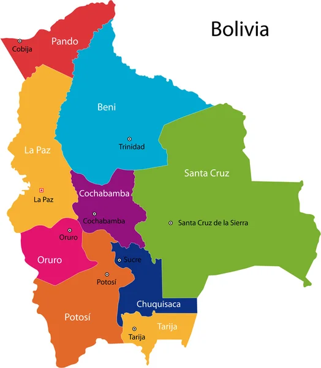

Chuquisaca
El Departamento de Chuquisaca es un departamento de Bolivia ubicado en el sudeste del país. Limita al norte con los departamentos de Potosí, Cochabamba y Santa Cruz; al sur con Tarija; al este con Santa Cruz y la República de Paraguay y al oeste con Potosí. La mayoría de la población está concentrada en la capital.
La Paz
La Paz, capital política de Bolivia, es una ciudad acogedora, llena de contrastes y con una cultura viva única, es el punto de encuentro más sorprendente de las culturas nacionales con el mundo occidental, por ello se ha constituido como la más cosmopolita de Bolivia.
Santa Cruz
Conocida como la ciudad de los anillos, conformada por 10 anillos concéntricos. Actualmente está considerada como centro económico de Bolivia, destacando la industria agropecuaria, forestal, minera y de hidrocarburos. El Departamento de Santa Cruz, es uno de los que más aporta al PBI del país.
Cochabamba
Cochabamba es un departamento de hermosos y fértiles valles ubicados entre la cordillera de los Andes Orientales, que poseen un inigualable clima mediterráneo. Es por ello que el valle central de Cochabamba es conocido como la región de la eterna primavera, muy apropiada para el descanso, la salud y la recreación.
Potosi
Son idiomas oficiales del Departamento de Potosí el castellano o español y el quechua.
Tarija
El Departamento en general tiene un clima social tranquilo con altos niveles de seguridad ciudadana.
...